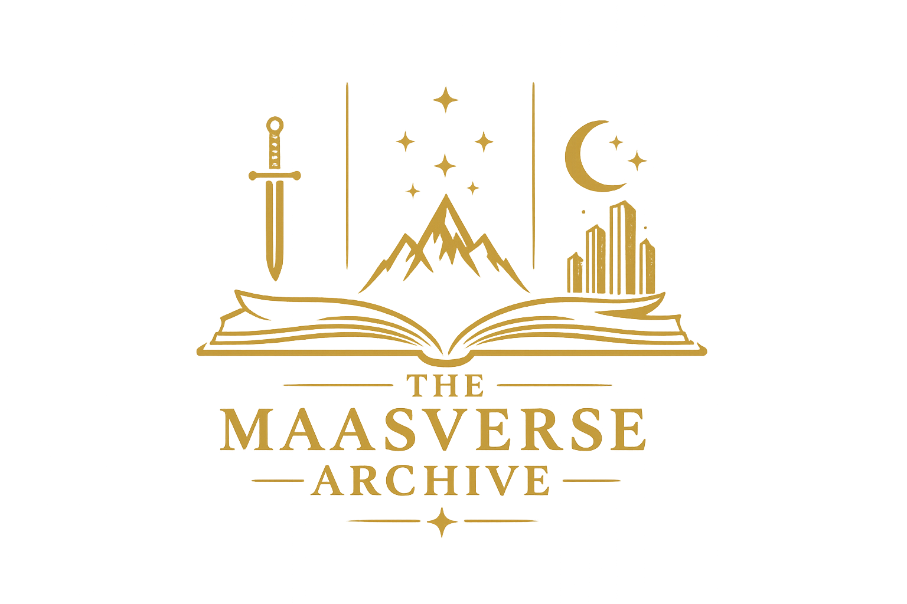

Set in a vast fantasy world of shifting kingdoms, ancient secrets, and rising rebellion, this series follows a young assassin whose life changes when she is given a chance at freedom through a brutal competition. What begins as a fight for survival slowly expands into a sweeping story of identity, destiny, and resistance against powerful forces shaping the world from the shadows. As the series progresses, the scope grows from court intrigue and personal survival into a much larger conflict involving forgotten histories, magic, and the fate of entire realms. At its core, it is a journey of transformation—of becoming stronger through hardship, building unlikely alliances, and discovering what it truly means to fight for a better world.
Inspired by fantasy and fae mythology, this series begins with a human huntress whose life is changed after crossing into a dangerous and enchanting faerie realm. What follows is a story that blends romance, political tension, and dark magic in a world ruled by powerful courts with their own secrets and agendas. As the story unfolds, it shifts from personal survival into a much broader struggle between realms, where trust, trauma, and healing play just as important a role as power and war. At its heart, the series explores transformation, emotional recovery, and the strength found in choice, love, and resilience in the face of overwhelming forces.
Set in a modern, urban fantasy world where magic exists alongside technology, this series follows a half-human, half-fae protagonist living in a bustling city filled with angels, demons, and ancient powers hidden beneath everyday life. When a devastating event shakes her world, she is drawn into an investigation that uncovers far deeper layers of corruption, mystery, and danger. As the story expands, it becomes a fast-paced blend of mystery, political tension, and supernatural conflict. The series explores themes of grief, loyalty, friendship, and truth, while gradually revealing a much larger and more interconnected world than it first appears.